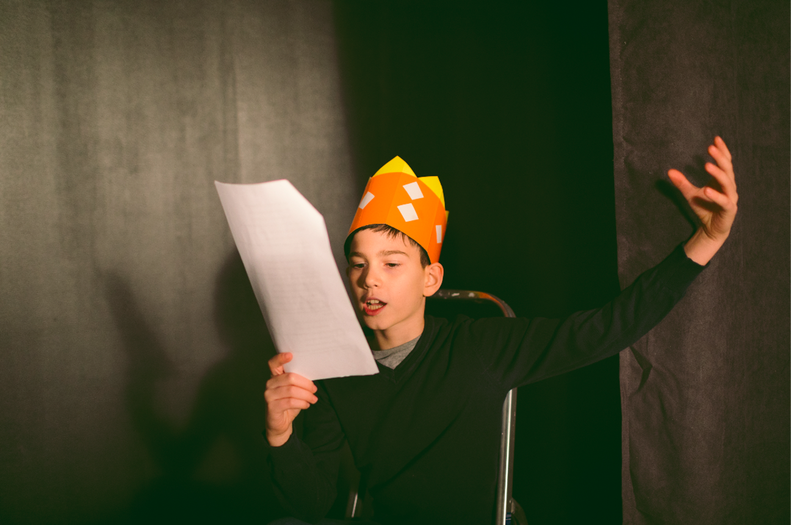
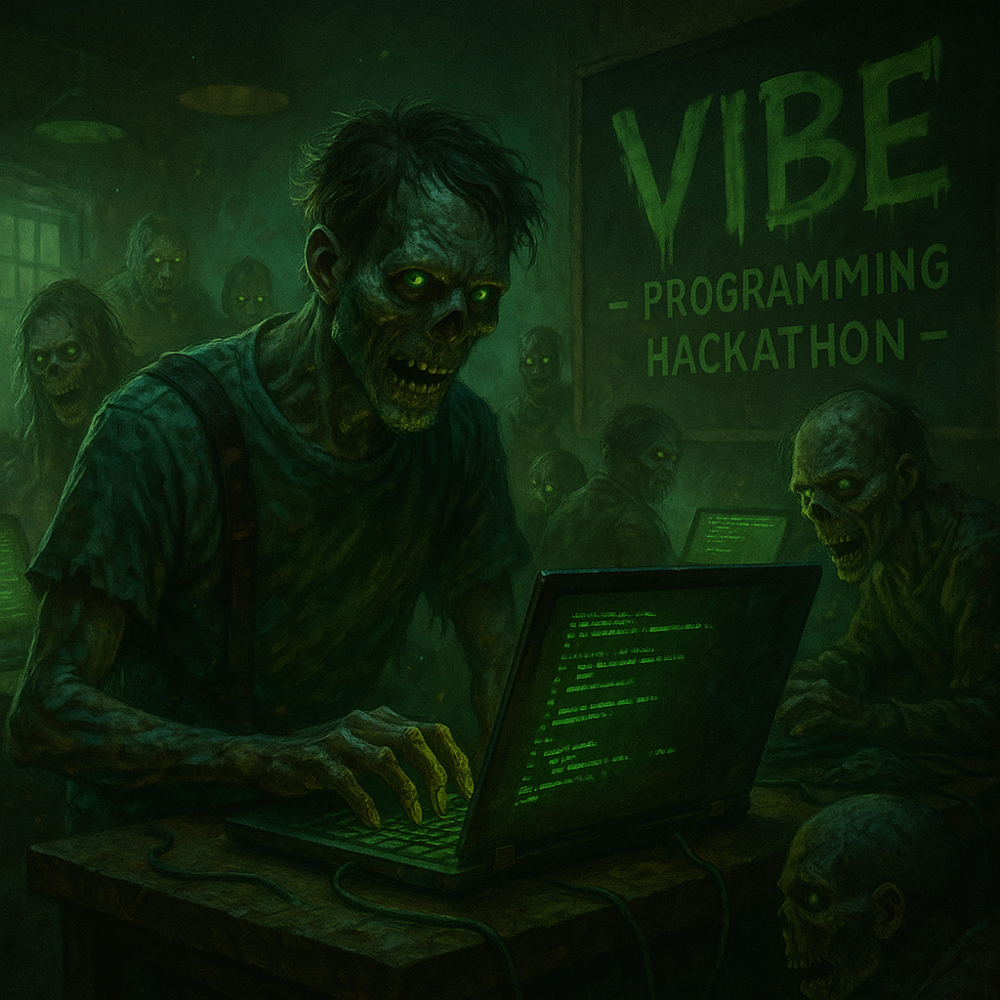

där idéer blir event
Föreställ dig en kväll där kreativiteten inte bara flödar, utan sprakar av energi och glädje. Här samlas människor med en passion för berättande och låter sina idéer växa till något större än de själva. I vår kreativa manusförfattarverkstad får du möjlighet att utforska nya uttryckssätt, inspireras av andras berättelser och tillsammans skapa historier som verkligen berör. Oavsett om du är nybörjare eller erfaren skribent, är du varmt välkommen att dela din röst. Kom och upptäck magin i att skriva tillsammans, där varje tanke kan bli början på ett nytt äventyr och där gemenskapen lyfter oss alla.
Tänk dig ett rum fyllt av förväntan och spänning, där kodrader blinkar i mörkret och musiken pulserar i takt med hjärtat. Vårt hackathon med zombietema är så mycket mer än en tävling. Här får du chansen att utmana dig själv, samarbeta med andra och låta fantasin ta över helt och hållet. Teknik och kreativitet möts i en unik atmosfär där varje idé kan förvandlas till verklighet. Kom och upplev en natt där gränser suddas ut, där innovationen står i centrum och där du får vara med och skapa något oförglömligt. Alla är välkomna, oavsett tidigare erfarenhet, och tillsammans bygger vi en gemenskap där alla bidrag räknas.
Föreställ dig en plats där framtidens appar tar form, där visionärer och utvecklare möts för att inspirera varandra och bygga något som kan förändra världen. På vårt apputvecklar-konvent får du möjlighet att nätverka, dela idéer och lära dig av de bästa inom branschen. Här skapas inte bara appar, utan också vänskaper och samarbeten som kan leda till nästa stora genombrott. Kom och bli en del av en gemenskap där din kreativitet och drivkraft får blomstra. Här får du chansen att växa, både som utvecklare och som människa, och tillsammans skapar vi framtidens digitala upplevelser.
Längtar du efter att dela tankar och idéer med likasinnade? Vår månatliga brainstorm om datascience är en mötesplats för dig som vill utforska framtidens möjligheter tillsammans med andra nyfikna och engagerade deltagare. Här hyllar vi nördighet, skrattar tillsammans och inspireras av varandras insikter. Ta med din nyfikenhet, dina frågor och din vilja att lära. Tillsammans skapar vi en atmosfär där allt är möjligt och där varje möte ger nya perspektiv. Kom och var med när vi tillsammans utforskar data, teknik och framtidens utmaningar i en öppen och välkomnande miljö där alla får ta plats.